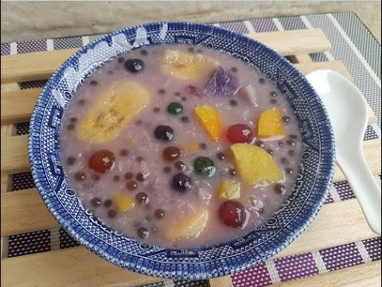

Binignit

Description
Binignit is a warm root crop and fruit stew consisting of a thick mixture of tubers such as taro, purple yam, sweet potato, as well as bananas, jackfruit, sago, tapioca pearls and sugar, cooked in coconut milk and thickened with milled glutinous rice.
Ingredients
- 1 pc white gabi (taro root) you can substitute cassava if available, cubed
- 1/2 cup sugar
- 2 pcs yellow camote (sweet potatoes), cubed
- 1/2 tsp salt
- 1 pc ube (purple yam), cubed
- 4 tbsps landang or tapioca
- 4 pcs ripe Saba (plantain), sliced
- 6 pcs ripe Langka (jackfruit)
- 2 cups coconut milk
- 1 cup coconut milk, diluted with water
Steps
- Cook gabi, camote, ubi, and Saba (plantain bananas) in diluted coconut milk.
- Add sugar, salt, and landang (or tapioca).
- Add Langka then simmer until all ingredients are tender and mixture is thick.
- Add 2 cups coconut milk. Cook in medium heat.
- Do not boil or liquid will curdle. Adjust amount of coconut milk to your available ingredients.
- Serve hot.
Source